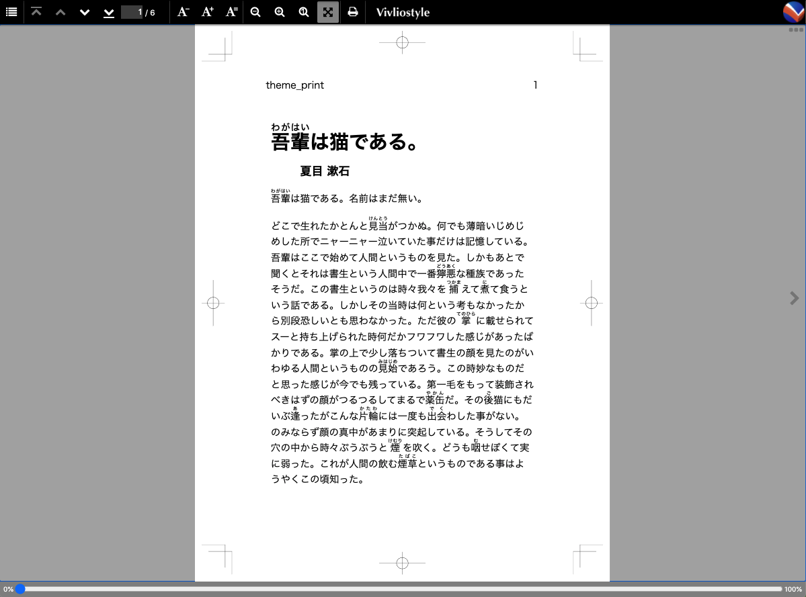

Vivliostyle Themes の
ハンズオン

CSS組版 Vivliostyle ユーザーと開発者の集い 2021春
2021.04.10 やましー
CSS組版 Vivliostyle ユーザーと開発者の集い 2021春
2021.04.10 やましー

Themes まわりの基本的な機能
@vivliostyle/themes の作り方
近いうちできるようになること
"スピーディー" な本づくりと "カスタマイズ可能" な本づくり


theme-bunko

theme-slide

theme-teckbook
theme-academic
良ければ一緒に手を動かしましょう 💻
yarn create vivliostyle-theme my-doujin
$ yarn create vivliostyle-theme my-doujin
? description すごい合同誌のTheme
? author name わたし
? author email watashi@example.com
? license AGPL-3.0
? choose category novel
Success! Created vivliostyle-theme-my-doujin.
1. cd vivliostyle-theme-my-doujin
2. edit scss/*.scss
3. publish to npm ($ npm publish)
✨ Done in 46.57s.$ cd vivliostyle-theme-my-doujin
$ tree . -I node_modules
.
├── LICENSE
├── README.md
├── example サンプル原稿
│ ├── default.html
│ └── default.md 🖋Markdownを書く
├── package.json
├── scss デフォルトで3つのスタイルファイル
│ ├── theme_common.scss 🖋 Themeの共通部分
│ ├── theme_print.scss 🖋 出版物 (PDF) 印刷用スタイル
│ └── theme_screen.scss 🖋 出版物 (HTML) 閲覧用スタイル
├── vivliostyle.config.js 🖋 プレビュー用設定ファイル
└── yarn.lock# {吾輩|わがはい}は猫である。
## 夏目 漱石
{吾輩|わがはい}は猫である。名前はまだ無い。# 羅生門
## 芥川 龍之介
ある日の暮方の事である。一人の{下人|げにん}がmodule.exports = {
language: 'ja',
theme: 'theme_print.css',
entry: [
'example/ch01.md',
'example/ch02.md',
],
}yarn dev でプレビューしますこれはデフォルトのスタイル
/* ... */
@import "_my_style";@page :first { counter-reset: p; }
@page { counter-increment: p; }
/* 小口側、上にページ番号 */
@page :left {
@top-left { content: counter(p); }
}
@page :right {
@top-right { content: counter(p); }
}/* 章番号 */
@page :nth(1) {
counter-increment: chapter p;
}
/* 章タイトル */
h1 {
&::before {
content: "第 " counter(chapter) " 章";
display: block;
}
}
/* 章タイトル */
h1 {
border-top: 10pt solid black;
&::before {
content: "第 " counter(chapter) " 章";
display: block;
font-size: 80%;
margin: 10pt auto;
}
}
/* 著者名 */
h2 {
text-align: right;
border-bottom: 10pt solid black;
}module.exports = {
// ...
entry: [
{ rel: 'contents', theme: 'theme_toc.css' },
// ...
],
toc: true,
tocTitle: "目次",
}@import "theme_common";
@import "theme_common";
/* いらないところを消す */
@page :left {
@top-left { content: ""; }
}
@page :right {
@top-right { content: ""; }
}
h1 { display: none; }
h2 { text-indent: 0; }
nav ol {
padding: 0;
list-style: none;
}nav ol {
/* ... */
li a {
text-decoration: none;
color: inherit;
&::before {
content: "第 " target-counter(
attr(href url), chapter) " 章";
margin-right: 1rem;
}
&::after {
content: target-counter(attr(href url), p);
float: right;
}
}
}
// ...
{
path: 'example/ch01.md',
theme: 'theme_ch01.css',
},
{
path: 'example/ch02.md',
theme: 'theme_ch02.css',
},@import "theme_print";
h1, h2 { border-color: darkcyan; }<body> の class を設定---
class: natsume
---
夏目漱石---
class: akutagawa
---
芥川龍之介body.natsume {
h1, h2 { border-color: darkcyan; }
}
body.akutagawa {
h1, h2 { border-color: sienna; }
}
Theme をコンポーネント化してより細かい単位で使えるかも
theme: [
'report.css',
'twocolumn.css',
]